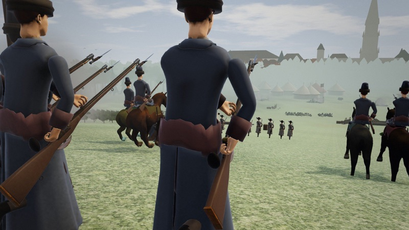

Standards In Smoke
Play Standards In Smoke
Runs in the browser, off a single file. No account, no install.

Also from DeadlyDog Forester: Reckoning Stand in the line at Vienna, 1683, then lead the Emperor's armies across a map of Europe: battles in first person and a grand campaign. Free demo for Mac and Windows.About This Game
Standards In Smoke is a hex-tile strategy game in the shape of Civilization, set in the age of muskets. You pick a nation off an illustrated roster — Great Britain, Austria, France, Russia, Prussia, the Ottoman Empire and sixteen more — and start with its historical capital already on the map.
From there it is the familiar loop done properly: settle, improve the land, run a production queue, push a tech tree, and take ground off the neighbours. Terrain matters. Formation matters — line for firepower, square against cavalry, column to move. Seasons matter most of all: a harsh winter cuts your food in half and starts killing anything caught outside a city.
What sets it apart is the politics at home. Every nation has two to four real noble houses — Habsburgs, Bonapartes, Romanovs, Hohenzollerns — each with an opinion of you that moves with your legitimacy, your treasury and the buildings you raise. Let a house get angry enough and it raises a rebellion outside your own capital. There are a hundred and twenty events waiting on the state of your empire, and four of them can kill a character outright.
It runs in a browser, off a single file, with no install and no account.
Game Features
- 21 Historical NationsEach with a real capital, a deep pool of period city names, and a banner colour. Up to twenty AI opponents.
- A Map of Europe, and Eight Historical StartsPlay on an engraved chart of the continent, every crown at its real capital under its crowned head of 1680, Louis XIV, Leopold I or the Great Elector, and its rivers and seas under their old names, or begin in 1805 with the Third Coalition already at war with France: Napoleon, George III, Francis II and Alexander I on their thrones, the Grande Armée in the field, and the score counted at the Congress of Vienna in 1815. Or in 1812, with the Grande Armée on the road to Moscow. Or begin in 1792, in the wars of the Revolution: Louis XVI's France against Austria and Prussia, Valmy, the King's trial, the Terror and General Bonaparte, to the Peace of Amiens. Or in 1756, in the Seven Years' War: Frederick the Great against France, Austria and the Empress Elizabeth's Russia. Or in 1740, as Frederick seizes Silesia from the young Maria Theresa. Or in 1700, with two wars at once: Marlborough and Prince Eugene against Louis XIV, and Charles XII of Sweden against Peter the Great. Or in 1683, with the Grand Vizier's army at the gates of Vienna and John Sobieski riding to relieve it. Or in 1672, the Dutch Republic's Disaster Year, when the dikes were opened against Louis XIV. History moves as it went, and where its wars, peaces and changes of sides concern your crown, they are put to you to accept or refuse. Or play on unknown lands drawn anew each game.
- Coalitions and TempersEvery rival crown has a temper. Grow too great and the crowns that distrust you band together against you; let a rival grow too great and you are asked to join the coalition against it. A lens on the map shows at a glance who stands with you and who against.
- Procedural Hex MapsPlains, forest, hills, mountain, swamp, rivers, lakes and ocean, on maps from 60×40 up.
- Cities That Need RunningProduction queues, jobs, tile improvements, border expansion, and costs that scale with every city you add.
- Reigns and SuccessionsRulers age with the calendar and die; heirs come of age and are crowned under their regnal names, a consort rules as regent for a child, and the Annals of your reign keep it all.
- Noble HousesOpinion scores that drift with your rule, an Appease button, and scaled rebellions when you ignore them too long.
- 120 EventsConditional on coastline, terrain, war, peace, gold, legitimacy, season, tech, buildings and family politics.
- Laws of the RealmGovernance, labour, culture and order — adopt them with your orders, and live with the trade.
- Muskets and ManoeuvreSwordsmen through crossbowmen to hussars, lancers and heavy cavalry, with morale, XP and formation.
- AmbitionsSet your crown one goal at a time, from three offered, as in Old World. Fulfil ten and the victory is yours.
- Promotions and BrigadesRegiments earn a promotion at each rank and you choose it, and up to three companies can be formed into one regiment that fires as one.
- Ships That Carry ArmiesMarch a regiment onto a frigate, galleon or ship of the line beside the coast, sail it across, and put it ashore on the far side; lose the ship and you lose the men aboard.
- Four SeasonsFertile springs, harsh winters, attrition outside your walls, and a calendar that keeps moving.
System Requirements
Minimum
- OS: Any — it runs in the browser
- Browser: A current Chrome, Edge, Firefox or Safari
- Memory: 4 GB RAM
- Storage: None — saves live in your browser
- Input: Keyboard and mouse
- Display: 1280 × 720
Recommended
- Browser: Desktop Chrome or Edge
- Memory: 8 GB RAM
- Display: 1600 × 900 or larger — a big map wants the room
- Note: Late-game turns on the largest maps with twenty opponents are the heaviest thing the game does. A desktop handles them comfortably.